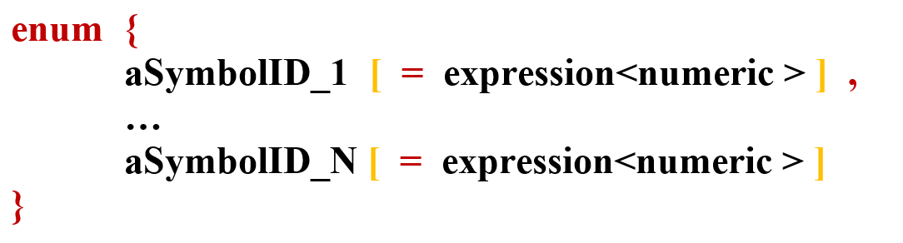
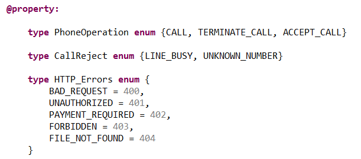

Enumerated types are sets of named values that usually behave as constants in the language.
The general syntax is the following (see BNF syntax) :
In the following code, we define enumerated types both with default numbering and with a special numbering.
The default numbering would be for instance :